Auditoría del sitio actual y propuesta visual construida con la identidad real de MagicArena: su logo, su paleta y su tipografía.
Sitiomagicarena.cr
FechaNoviembre 2026
AlcancePágina principal y menú
EntregablesAuditoría, sistema de marca y prototipo navegable
Resumen
El contenido es bueno. La forma no le hace justicia.
MagicArena tiene un logo cuidado, una historia auténtica y un espacio real precioso. El sitio actual no usa nada de eso: la paleta, las fuentes y varias fotos no corresponden a la marca. En celular no hay menú y la página principal mide más de 37.000 px de alto. La propuesta conserva todo el contenido valioso, lo ordena según lo que una familia necesita para decidir su visita y lo presenta con la identidad propia de la marca.
Largo de la página en celular
37.346 px12.326
67 % menos scroll
Peso del HTML inicial
690 KB48 KB
Las fotos dejan de ir incrustadas en el código
Enlaces de navegación en celular
06
Menú desplegable accesible
Fuentes de marca que cargan
02
Tenor Sans y Nunito Sans
Lo que funciona
Lo que conservamos.
Hay una base sólida. El rediseño parte de estas fortalezas en lugar de reemplazarlas.
Un logo con carácter
Arcoíris de trazo fino, hojas y una paleta terrosa coherente. Transmite calma y calidez, justo lo que promete el espacio.
Una historia auténtica
“Somos padres. Creamos el espacio que también queríamos encontrar.” Es el mensaje más poderoso del sitio y diferencia a MagicArena.
Voz local y cercana
El voseo y el trato cálido conectan con familias costarricenses. Lo mantenemos en todo el texto.
WhatsApp con mensaje listo
Cada botón abre WhatsApp con un mensaje precargado según el producto o servicio. Funciona muy bien en Costa Rica.
Información útil
Horario, ubicación, envíos con Correos, formas de pago, beneficios para colegios y programa social: todo existe, solo hay que ordenarlo.
Fotos reales de producto
Los productos de la tienda tienen fotos propias, precio y descuento. Se nota que son reales y eso genera confianza.
Lo que hay que corregir
Lo que hoy le resta a la marca.
Ordenado por impacto en la decisión de una familia: confiar, entender y reservar.
Identidad de marca
Impacto alto
El sitio no usa los colores del logo
El logo es teal empolvado, celeste, arena y ocre. El sitio usa rojo-naranja, dos verdes, amarillo, rosado y un teal casi negro. Cada sección tiene un color de fondo distinto, y el resultado se parece más a una plantilla genérica que a MagicArena.
Colores más usados en el sitio: #E85A3D, #3F743F, #218C59, #102F32. Ninguno aparece en el logo.
Propuesta: una paleta de 6 colores tomada directamente del logo, con fondos crema y lino y un solo color de acción (terracota) para los botones.
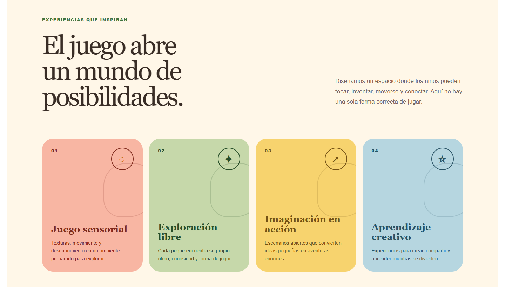
Sitio actual: cuatro colores en cuatro tarjetas consecutivas.
Impacto alto
Las fuentes de la marca nunca cargan
Los títulos usan Georgia, una fuente del sistema. El texto declara Nunito Sans, pero la fuente no se carga y cada equipo la reemplaza por Avenir o Arial. La frase “Pequeñas manos. Grandes historias.” está escrita en Comic Sans.
Fuentes cargadas realmente: solo Inter (la del editor Framer), que además no se usa en el contenido.
Propuesta: Tenor Sans (la sans humanista del “Indoor Playground” del logo) para títulos y Nunito Sans para el texto, ambas cargadas correctamente.
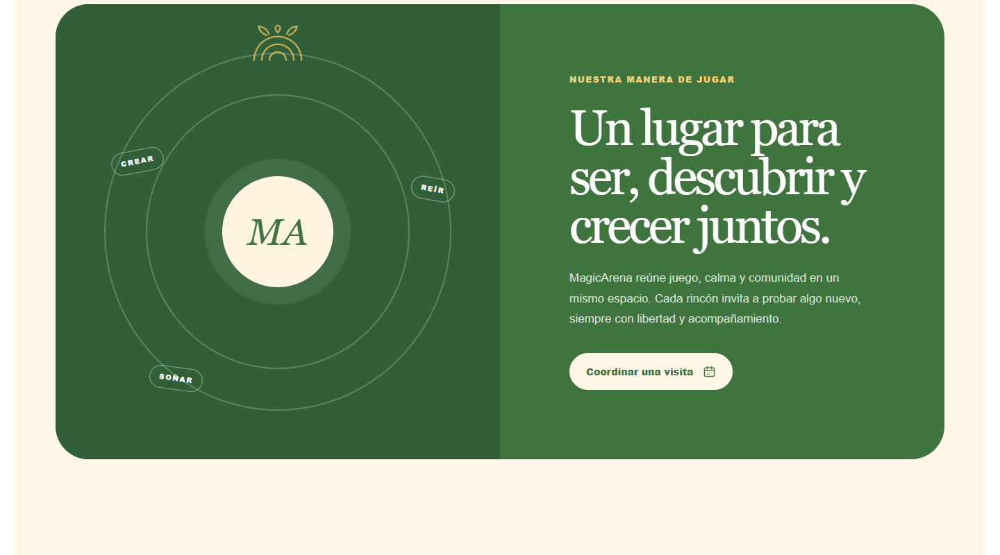
Títulos en Georgia y un adorno de órbitas con “MA” que no forma parte de la marca.
Impacto alto
Dos identidades distintas en el mismo sitio
La página del menú tiene otro logo (una “M” en un cuadrado), otro eslogan (“Juega · celebra · disfruta”), otra tipografía y otros colores. Para el visitante parece otro negocio.
Propuesta: un solo sistema visual para todas las páginas, con el mismo encabezado, la misma paleta y las mismas fuentes.
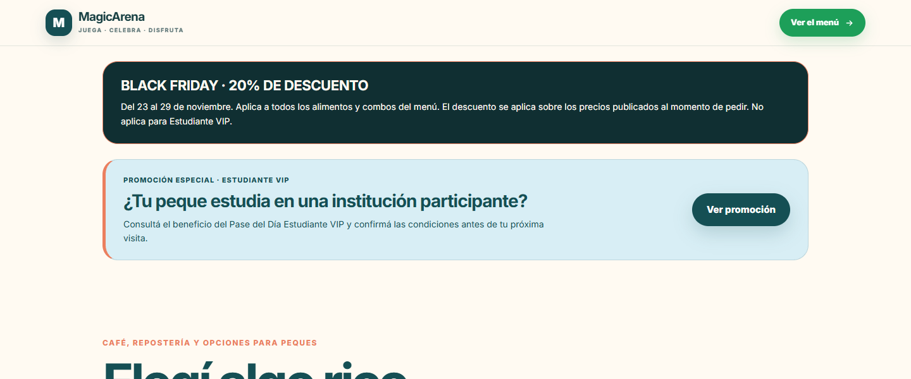
/menu: otro logo, otra fuente y otra paleta.
Impacto medio
Señales de “hecho con IA y sin revisar”
El sitio acumula adornos que no comunican nada: una cinta animada con “JUGAR ✦ IMAGINAR ✦ CREAR”, stickers girados, la órbita con “MA”, tarjetas numeradas 01–04, símbolos como ◌ ✦ ↗ ☆ usados como íconos y frases genéricas como “El juego abre un mundo de posibilidades”.
Sobre la cabecera aparece una barra de la plantilla de Framer (“MagicArena® · Momentum Pinares”) y todo el sitio está dentro de un marco blanco.
La consola del navegador registra un error de React (#422) que, según Framer, puede causar parpadeos.
Propuesta: eliminar la decoración que no aporta, escribir textos específicos del lugar (arena, Helado Café, calma) e íconos de trazo fino derivados del logo.
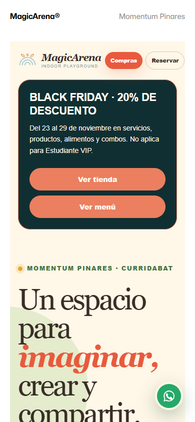
Celular: barra sobrante de la plantilla arriba de la cabecera real.
Confianza y contenido
Impacto alto
La foto principal es un flyer con un botón falso
La imagen del hero es un afiche completo con logo, textos y un botón “Coordiná tu visita” dibujado. Al tocarlo no pasa nada. Además, el flyer dice “Lunes: Cerrado”, mientras el sitio dice “Lunes a jueves de 1:00 a 7:00 p. m.”.
Propuesta: usar la foto del arenero sola, con el botón de reserva real al lado. Hay que confirmar el horario de los lunes antes de publicar.
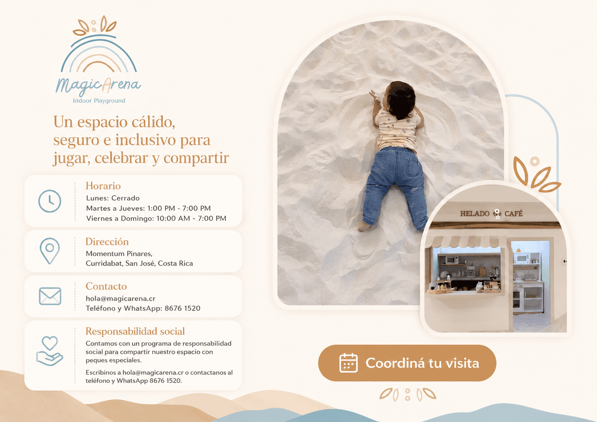
Imagen original del hero: el botón es parte de la imagen.
Impacto alto
Fotos que no muestran el espacio real
Las fotos de “Sobre nosotros” (familia en un arenero de madera) y de “Fiestas” (cumpleaños con resbaladero y plantas) muestran un lugar distinto al real, que tiene arena blanca y la cocinita Helado Café. Tienen la estética típica de imágenes generadas o de banco. Si una familia llega y no reconoce el lugar, la confianza se pierde.
Propuesta: el prototipo deja marcos reservados (“Foto real”) en lugar de esas imágenes. Recomendamos una sesión de fotos de medio día en el espacio, con familias reales y autorización de imagen.
Impacto alto
Falta lo que más pregunta una familia
No aparece el precio de la entrada, ni las edades recomendadas, la duración de la visita, las reglas (medias, acompañantes) o si hace falta reservar. Todo eso se resuelve hoy por WhatsApp, uno por uno.
Black Friday aparece tres veces en la home y en 23 insignias de producto, pero el precio de la entrada no aparece ni una vez.
Propuesta: un bloque “Tu visita” con horario, ubicación, tarifas y preguntas frecuentes, visible justo debajo del hero.
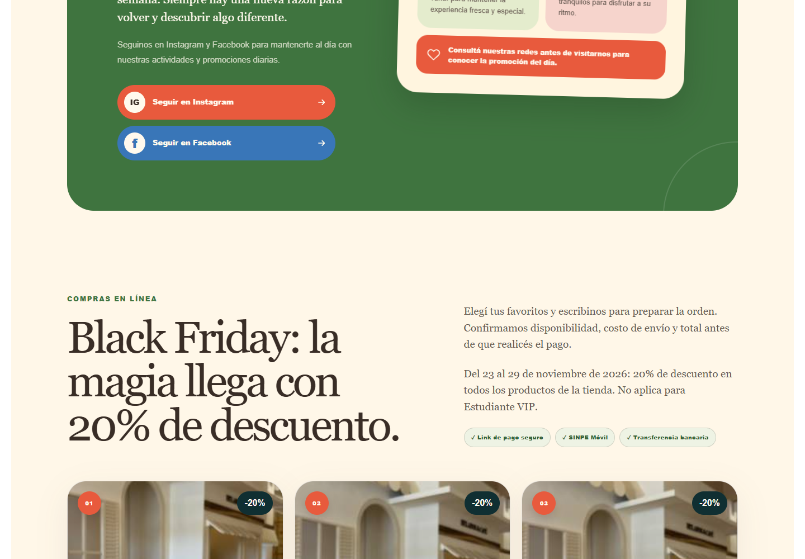
23 productos ocupan más de 6.000 px de la página principal.
Impacto medio
Detalles que se notan
La lista de colegios Estudiante VIP tiene duplicados aparentes: “Saint Peter’s” y “Saint Peter”, “Saint Clare” y “Saint Clair”.
El teléfono 8676 1520 abre WhatsApp, no permite llamar.
El menú del café está publicado como imagen: Google no lo lee, los lectores de pantalla tampoco, y no se puede copiar ni traducir.
La navegación principal tiene 7 enlaces y 2 botones, y le da más peso a “Compras” que a “Reservar”, que es el negocio principal.
Celular, rendimiento y buscadores
Impacto alto
En celular no hay menú
En pantallas pequeñas los 7 enlaces de navegación se ocultan y no hay botón de menú. La página mide 37.346 px (unas 44 pantallas), y el aviso de Black Friday ocupa toda la primera pantalla, así que la foto del lugar no se ve al entrar.
Propuesta: menú desplegable accesible, una barra de promoción delgada que se puede cerrar y una página principal un 67 % más corta.
Primera pantalla en un iPhone: no aparece ni la foto ni el menú.
Impacto medio
Pesado y casi invisible para Google
18 de las 28 imágenes están incrustadas en el código (base64): el HTML pesa 690 KB, el navegador no puede guardarlas en caché y la primera carga se hace más lenta.
La meta descripción dice solamente “MagicArena ”. El título de la página es “MagicArena”, sin “playground”, “Curridabat” ni “fiestas infantiles”.
No hay datos estructurados de negocio local (horario, dirección, teléfono), que ayudan a aparecer en Google Maps y en los resultados locales.
Los botones blancos sobre naranja (#E85A3D) tienen un contraste de 3,5:1, por debajo del mínimo de accesibilidad (4,5:1).
Propuesta: imágenes servidas como archivos optimizados, título y descripción con las búsquedas reales (“playground Curridabat”, “fiestas infantiles”), schema de negocio local y contraste AA en todos los botones.
Sistema de marca
Todo sale del logo.
No inventamos una identidad nueva: extraímos los colores y la tipografía del logo existente y añadimos solo los tonos necesarios para que el texto sea legible.
El arcoíris de trazo fino inspira las formas del sitio: fotos en arco, íconos de línea y separadores curvos.
Paleta del logo
Teal#5F97A7 Íconos y detalles
Bruma#8AB1C1 Wordmark
Cielo#C2DBE3 Bloques suaves
Arena#F1D9B9 Fondos cálidos
Ocre#D9A063 Acentos
Terracota#C1824A Hojas
Teal profundo#23464F Títulos · 7,9:1
Terracota profunda#9A5D2E Botones · 5,2:1
Tipografía
Jugar sin prisa
Tenor Sans · títulos. Es la sans humanista del “Indoor Playground” del logo: elegante y serena.
Arena, calma y juego libre
Nunito Sans · texto. Redondeada y muy legible. El sitio actual ya la declara, pero no la carga.
Principios
CalmaFondos crema, mucho aire y un solo color de acción.
VerdadSolo fotos reales del espacio, de los productos y de las familias.
ClaridadHorario, ubicación y reserva siempre a un toque.
Antes y después
La misma marca, con otra cara.
Deslizá el control para comparar la primera pantalla en computadora.
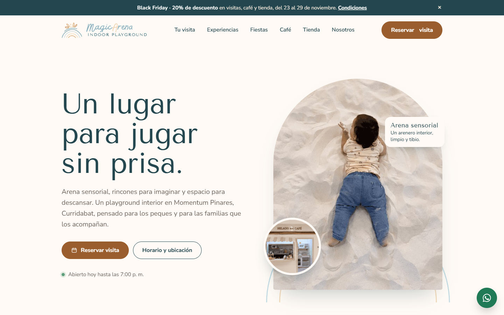
AntesDespués
Izquierda: sitio actual. Derecha: propuesta.
Antes
Barra de plantilla duplicada, sin menú, y el aviso ocupa la pantalla.
Después
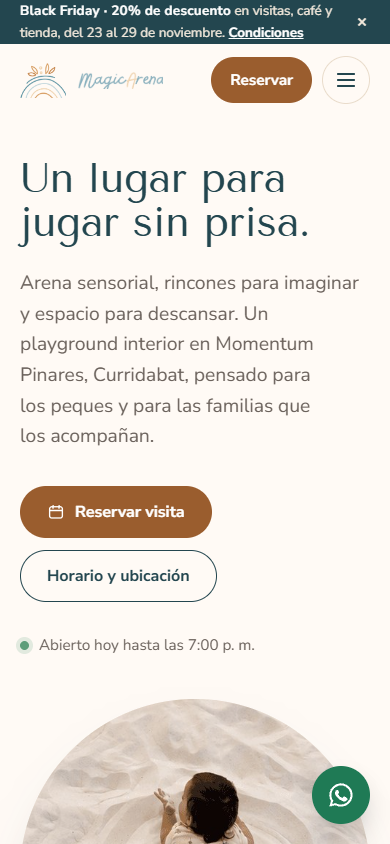
Logo real, mensaje claro, reserva y estado “abierto ahora”.
Después · menú
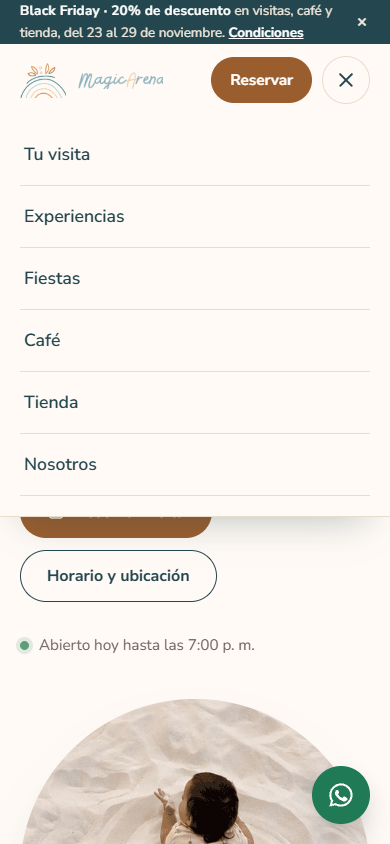
Seis destinos claros, accesibles con teclado y lector de pantalla.
Antes · /menuOtra marca: logo “M”, fuente Inter y paleta propia.Después · mismo sistemaEl menú, la tienda y cada página nueva comparten encabezado, colores y fuentes.
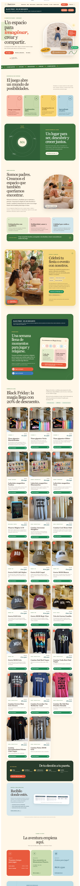
19.176 pxPágina actual
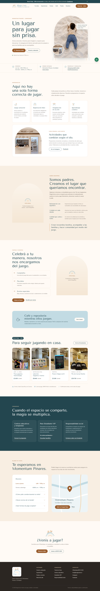
8.440 pxPropuesta
Nueva estructura
El orden en que una familia decide.
Primero, qué es y si puedo ir hoy. Después, qué vamos a encontrar y quién está detrás. Al final, todo lo demás.
Hero con foto realMensaje, reserva por WhatsApp y estado “abierto ahora” calculado con la hora de Costa Rica.
Datos de la visitaHorario, ubicación y contacto en una franja, sin tener que buscarlos.
ExperienciasArena sensorial, exploración libre, Helado Café y actividades de la semana.
Sobre nosotrosLa historia de los fundadores y sus tres valores, con una foto real.
Fiestas y eventosTres tipos de celebración y un botón directo para cotizar.
CaféUn bloque breve que lleva al menú, ahora con la misma marca.
Tienda destacada4 productos en la home; el catálogo completo pasa a su propia página.
ComunidadColegios, terapeutas, Estudiante VIP y programa social en un solo bloque.
Planeá tu visitaHorario del día resaltado, preguntas frecuentes, Maps y Waze.
Cierre y pie de páginaReservar o llamar, con enlaces ordenados por tema.
Próximos pasos
Lo que necesitamos de MagicArena.
Para pasar del prototipo al sitio publicado necesitamos esta información, que hoy no está en la web o se contradice.
1
Confirmar el horario de los lunesEl flyer dice “cerrado” y el sitio dice “1:00 a 7:00 p. m.”.
2
Tarifas de entradaPrecio por niño, acompañantes, duración y descuentos vigentes.
3
Sesión de fotos realEspacio, arenero, Helado Café, familias y una fiesta, con autorización de imagen.
4
Edades y reglas del espacioRango de edad, uso de medias y política para acompañantes.
5
Paquetes de fiestaQué incluye cada uno, capacidad y precio de referencia.
6
Archivos del logoVersión vectorial (SVG o AI) y el nombre de la fuente manuscrita del wordmark.
Fase 1 · Home y menú
Implementar el diseño aprobado
Menú del café en texto, no en imagen
SEO local y datos estructurados
Fase 2 · Tienda y fiestas
Catálogo completo con categorías
Página de fiestas con paquetes
Pedido por WhatsApp con carrito simple
Fase 3 · Medir y mejorar
Analítica de clics a WhatsApp
Ajustes según las preguntas frecuentes reales
Calendario de actividades semanales
Navegá la propuesta.
El prototipo funciona en computadora y celular: menú, estado de horario en vivo, preguntas frecuentes y enlaces reales de WhatsApp.